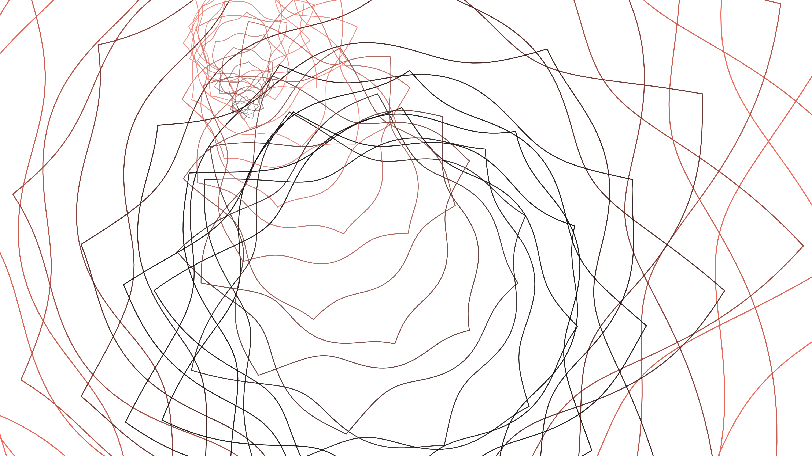
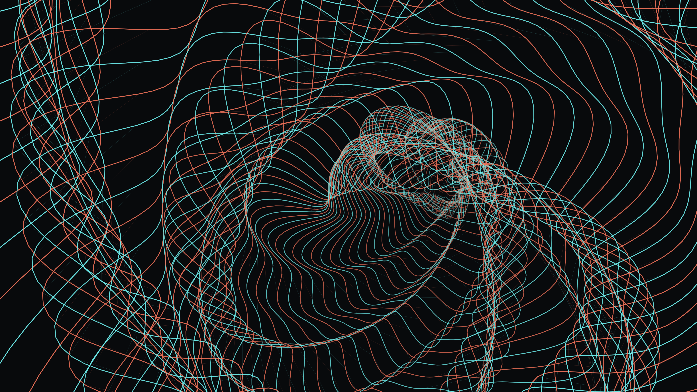
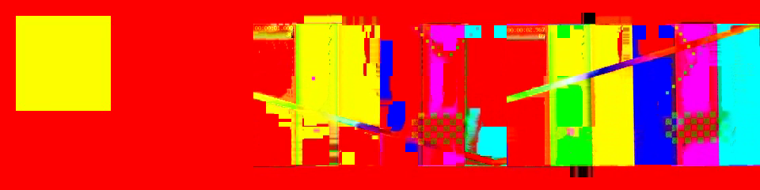
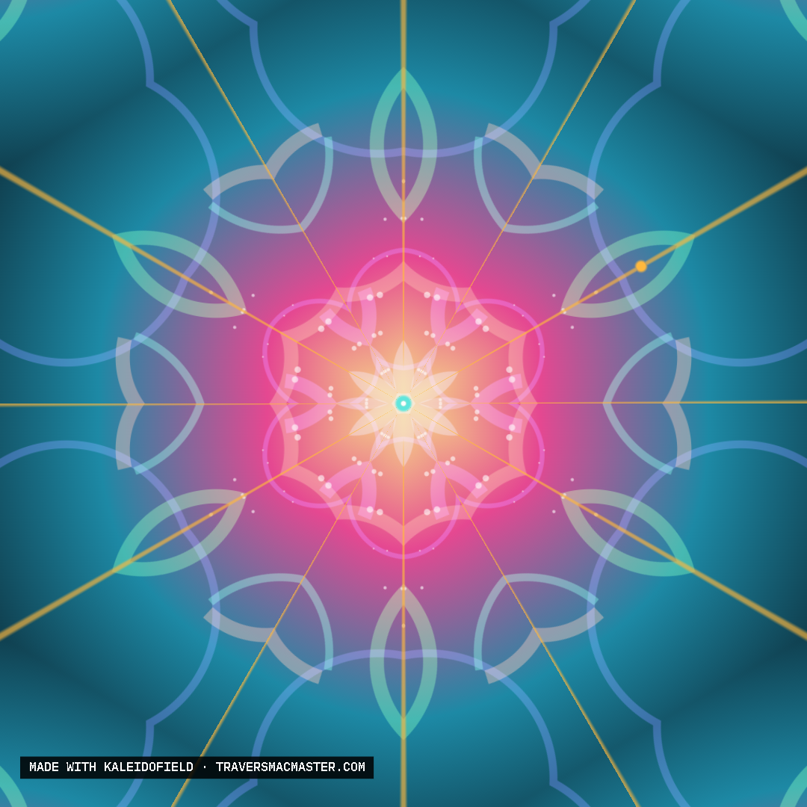
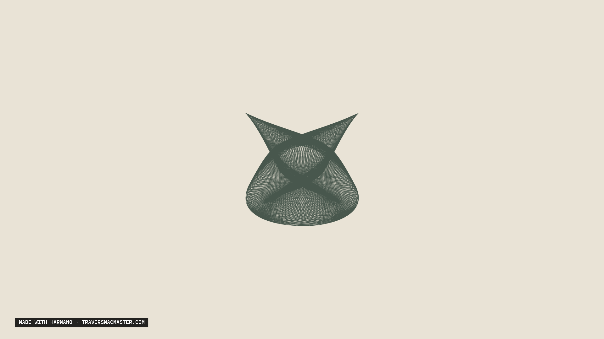
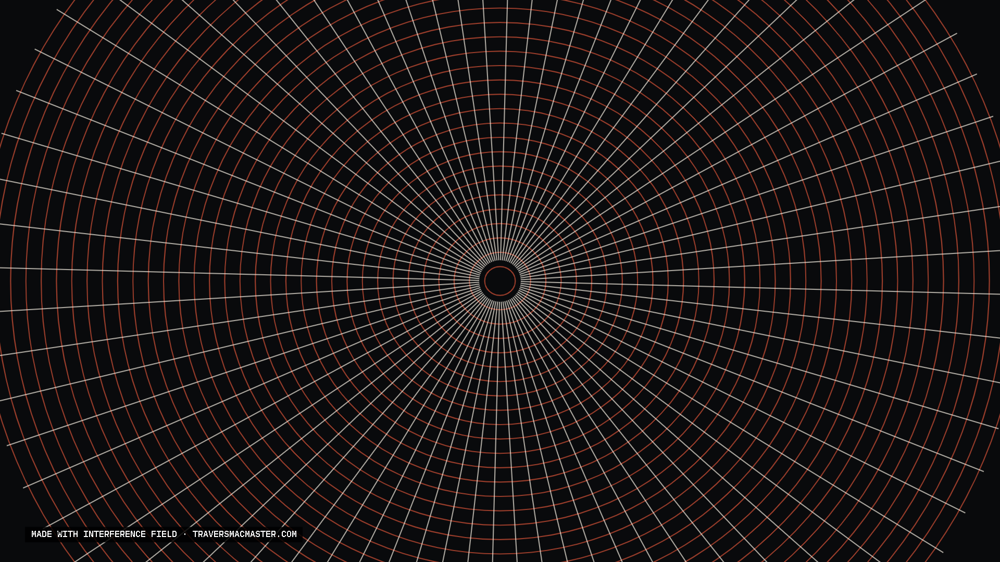
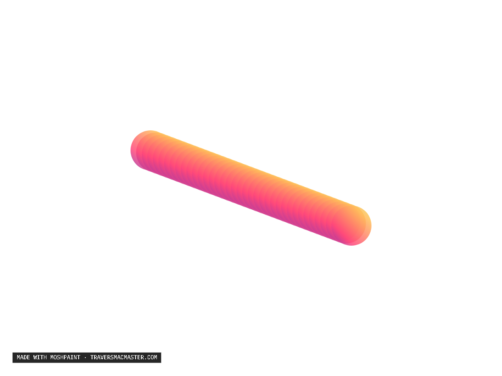
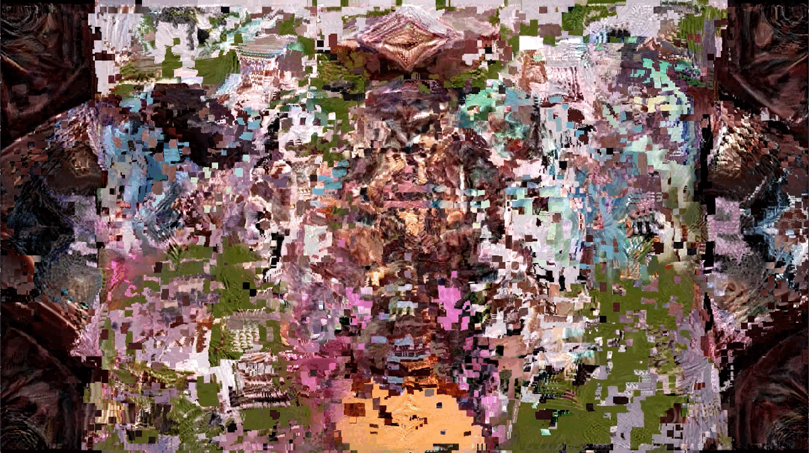

Visual / Audiovisual
Work
The output becomes art. A space for moving images and experiments made with the machines.
MoiréField
Explore the machine ⟶Made with MoiréField
Studies & motion

TunnelField
Explore the machine ⟶Made with TunnelField
Studies & motion


AuViMosh
Explore the machine ⟶Made with AuViMosh
Studies & motion

KaleidoField
Explore the machine ⟶Made with KaleidoField
Studies & motion

Guilloché
Explore the machine ⟶Made with Guilloché
Studies & motion
Harmano
Explore the machine ⟶Made with Harmano
Studies & motion

Interference Field
Explore the machine ⟶Made with Interference Field
Studies & motion

MoshPaint
Explore the machine ⟶Made with MoshPaint
Studies & motion

Motion studies
FROM THE STUDIO
Image, motion, and disruption.
Explore AuViMosh ⟶More work and process documentation will be added here.